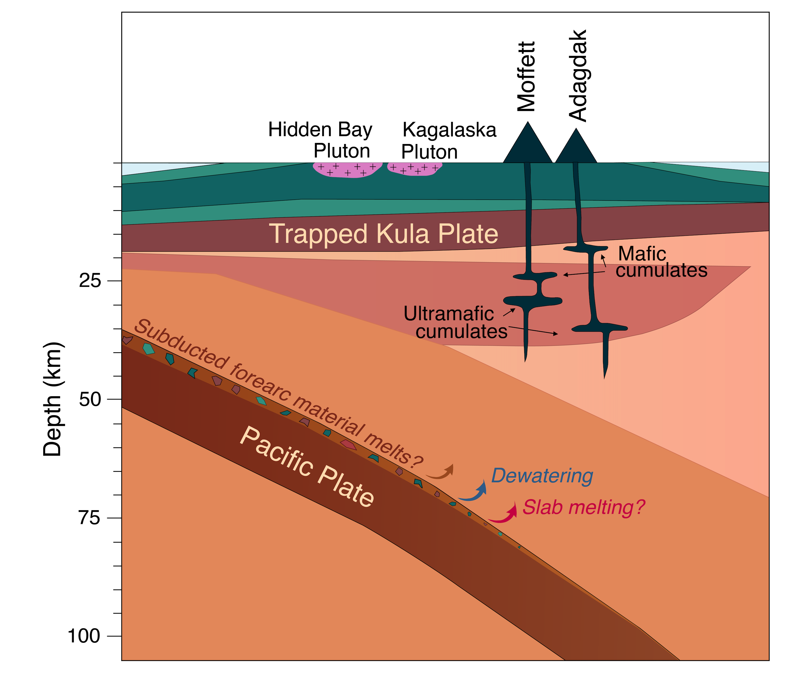

PhD Thesis
I completed my PhD under the guidence of Professor Claire Bucholz at Caltech and defended my thesis the end of April in 2024. A complete copy of my PhD is available from the Caltech thesis repository. A breif summary of each chapter is given below:
1. Petrography and geochemistry of Adak Island xenoliths
For the first chapter of my thesis, I document 39 previously undescribed xenoliths from the Mt. Moffett and Mt. Adagdak volcanic centers on Adak Island, Central Aleutians. These xenoliths were collected in the 1970s and graciously loaned to my research group by Sue and Robert Kay from Cornell University. Cumulate xenoliths from both volcanic centers range from primitive olivine pyroxenite to more evolved amphibole gabbro and hornblendite lithologies. My paper reports in-situ measurements of major element mineral chemistry for olivine, spinel, pyroxene, amphibole, and plagioclase, and trace element mineral chemistry for pyroxene, amphibole, and plagioclase. I used this data to evaluate the P-T-fO2-H2O conditions under which the cumulates formed, interrogate the nature of their parental melt, and explore the complex magmatic plumbing system beneath Adak Island. Temperature and oxygen fugacity (fO2), specifically, were constrained with mineral equilibria thermometry relying on Fe+2/ΣFe ratios of spinels. This work was published in JoP in 2024.